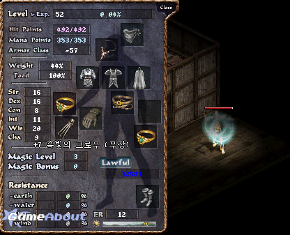

| 2003年10月2日
韓國死騎黑妖會心一擊魔法的測試
來源：Lineage
GameAbout
英文翻譯：Lineage
Center

在早幾天韓國出現了首名死騎級黑妖，他衝上52級的日子比較早前LineageGate所訪問的50級黑妖還要早呢！其後他與Lineage
GameAbout作了一個訪問及會心一擊(Final Burn)黑妖魔法的測試。
首名死騎級黑妖的名稱翻譯為"邪惡石巨王"，他是來自韓國的反王肯恩伺服器。在48級前他並不是十分專注練功，但在49級後他與另一名玩家一起24小時地練功，一天可以練到約15%。其實他較早前亦練了一名45級的體質型黑妖，其後亦練了一名力量型黑妖，他發覺這兩型的黑妖的MP都太少了，因此他轉練了精神型黑妖。黑妖職業的普遍問題是輔助魔法的MP消耗太高，假如在戰鬥中被相消了，最佳的做法是回家並等待MP重新再來。他的目標是成為25精神，25力量及25敏捷的黑妖，他們盡力去衝上70級。
會心一擊(Final Burn)黑妖魔法的測試如下：
他與54級的騎士一起作測試，騎士在27%，37%及47%魔防下，會心一擊都對他造成404HP的傷害。
在56%與64%魔防下，第一次都造成202HP的傷害，而第二次則有404HP。
而對54%魔防的角色則兩次都造成404HP傷害。
對74%魔防的騎士，兩次的會心一擊都失敗。
對81%魔防的妖精，第一次造成一半(202HP)傷害，而第二次則失敗。
由於測試樣本太少，因此我們未能推算會心一擊(Final
Burn)傷害計算的所有影響因素。暫時我們估計計算公式如下：
1. 假如此測試角色是有使用精神皮帶(403MP)，那麼傷害力
= 消費MP +
力量對傷害的加成。假如此測試角色沒有使用精神皮帶(353MP)，那麼傷害力
= 消費MP + 角色等級。
2.
由於會心一擊是攻擊魔法，因此被攻擊方的魔防就是傷害減半的機率。
3. 由於會心一擊是攻擊魔法，因此被攻擊方的ER就是閃躲此魔法的機率。 |